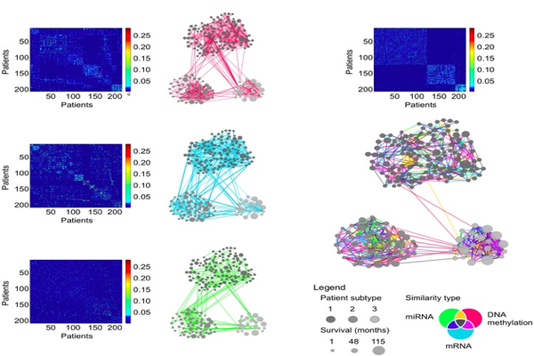

Similarity Network Fusion

Recent technologies have made it cost-effective to collect diverse types of genome-wide data. Computational methods are needed to combine these data to create a comprehensive view of a given disease or a biological process. Similarity network fusion (SNF) solves this problem by constructing networks of samples (e.g., patients) for each available data type and then efficiently fusing these into one network that represents the full spectrum of underlying data. For example, to create a comprehensive view of a disease given a cohort of patients, SNF computes and fuses patient similarity networks obtained from each of their data types separately, taking advantage of the complementarity in the data. We used SNF to combine mRNA expression, DNA methylation and microRNA (miRNA) expression data for five cancer data sets. SNF substantially outperforms single data type analysis and established integrative approaches when identifying cancer subtypes and is effective for predicting survival.